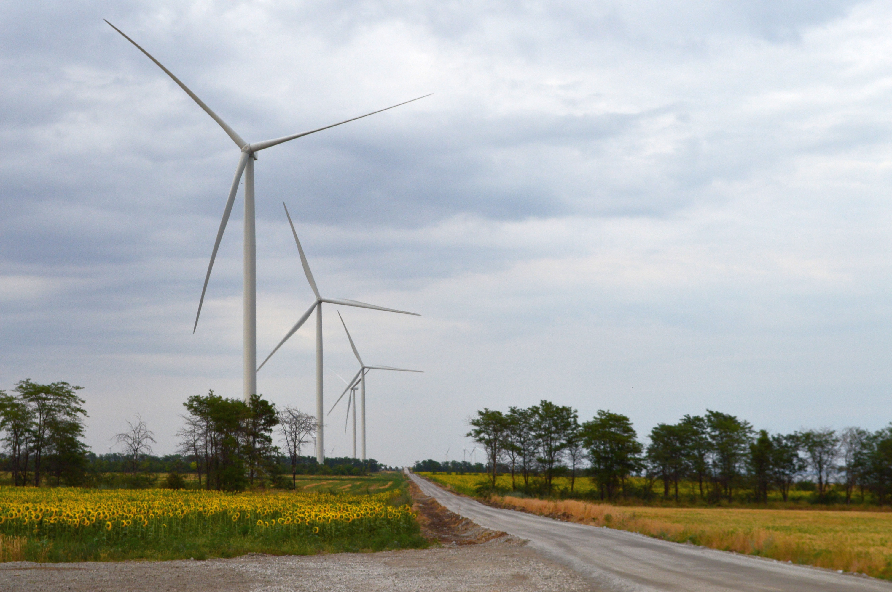
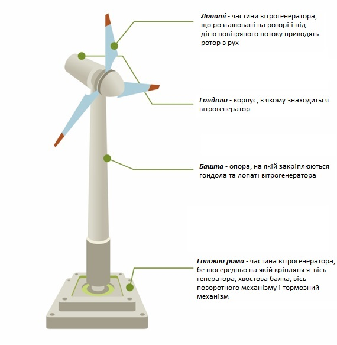

Про об'єкт
Приморська вітрова електростанція розташована в Запорізькій області на узбережжі Азовського моря. Цей об'єкт є прикладом успішного впровадження технологій відновлюваної енергетики, що використовують високий вітровий потенціал південного регіону України. Станція забезпечує стабільну генерацію «зеленої» електроенергії для тисяч домогосподарств.
Будівництво об'єкта було завершено у 2019 році. ВЕС оснащена сучасними вітроустановками, які працюють за рахунок кінетичної енергії вітру, перетворюючи її на електричну без шкідливих викидів у атмосферу. Станція є критично важливою для диверсифікації енергетичного балансу та підвищення екологічної безпеки держави.

Технічні параметри
| Параметр | Значення | Одиниці виміру |
|---|---|---|
| Номінальна потужність | 100 | МВт |
| Напруга генерації | 0,69 | кВ |
| Напруга видачі в мережу | 35 | кВ |
| Рік введення в експлуатацію | 2019 | рік |
| Кількість вітрогенераторів | 26 | шт. |
| Тип обладнання | GE 3.8-130 | - |
| Режим роботи | Цілодобовий | - |
| Місцезнаходження | Запорізька обл. | - |
Схема об'єкта

Контактна інформація
Адреса: Запорізька обл., Приморський район
Телефон: +380 (61) 123-45-67
Email: office@prymorska-ves.ua